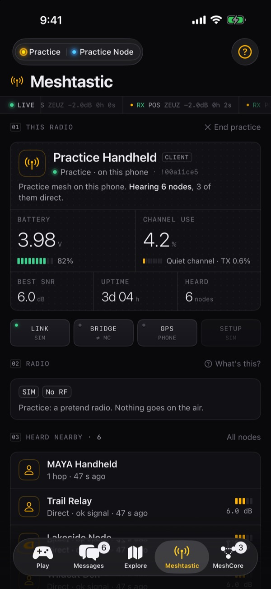
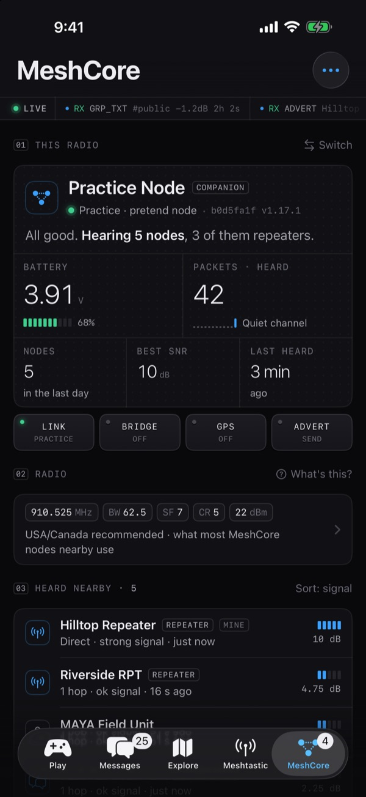
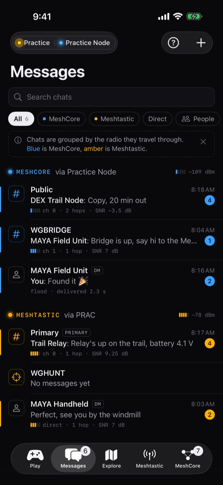
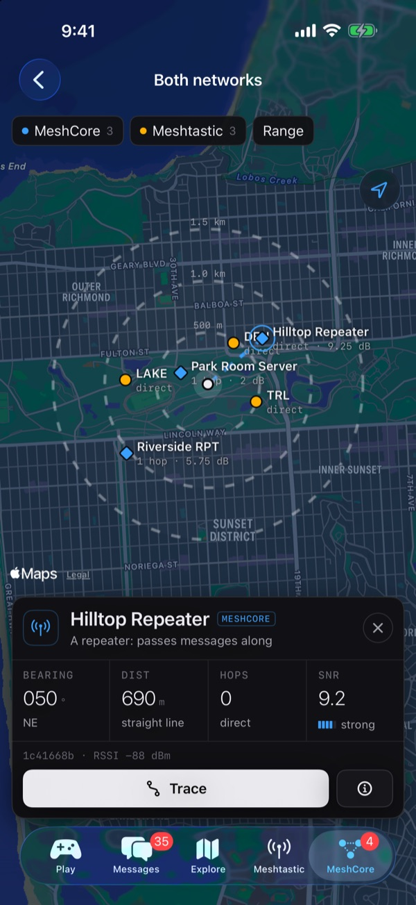
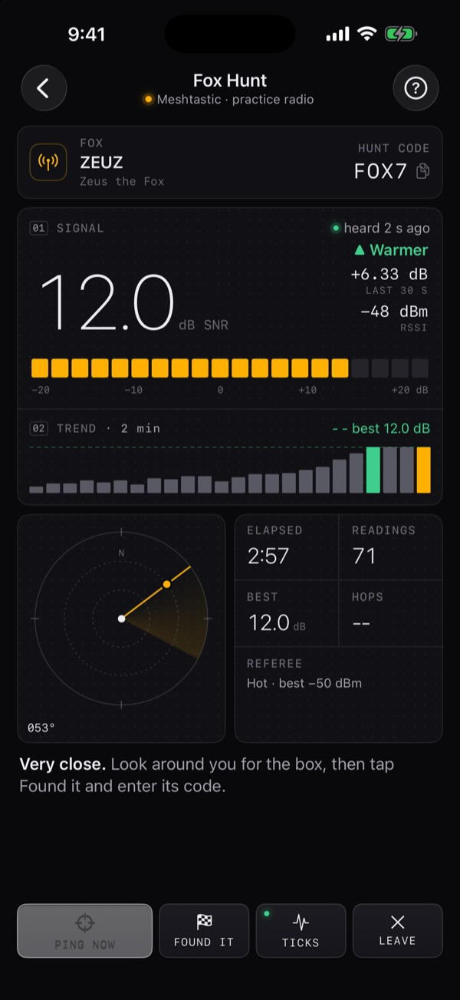
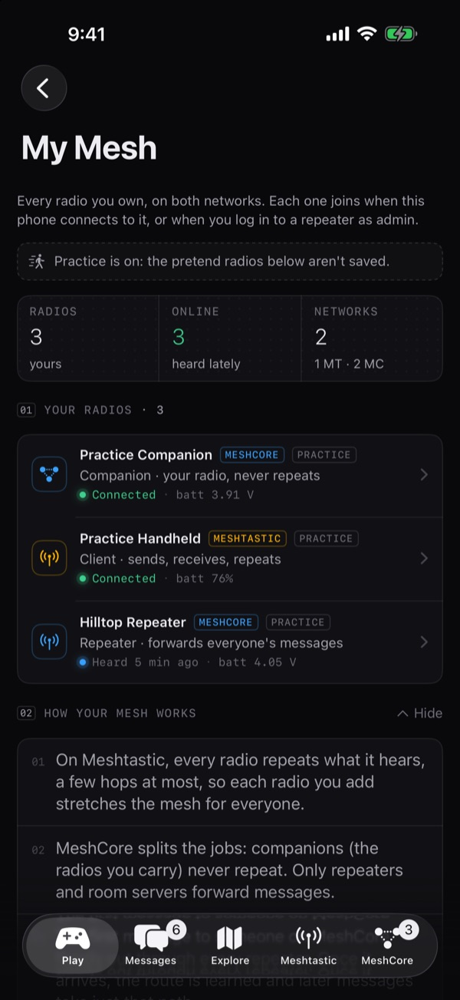
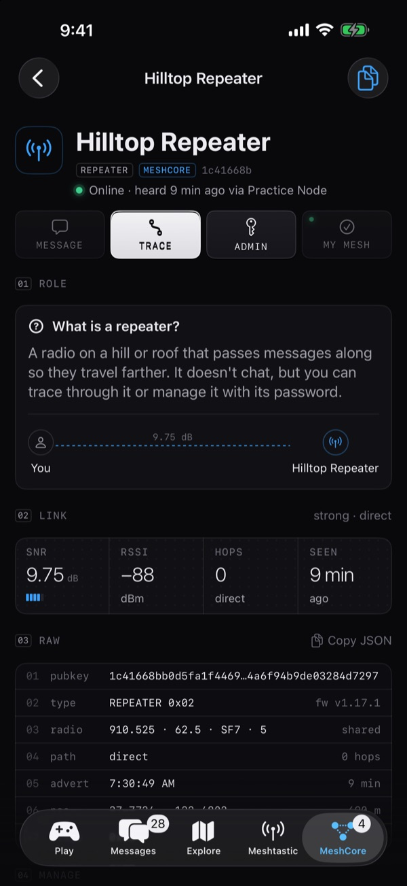
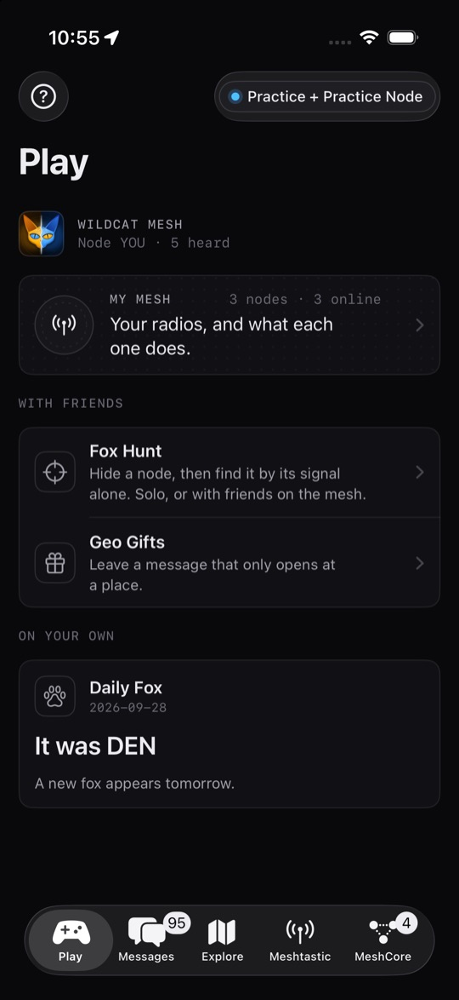

Wildcat Mesh
One iPhone app for Meshtastic® and MeshCore radios.
Chat on both LoRa mesh networks, bridge them together through your phone, and head outside for Fox Hunt and Geo Gifts. No account, no servers, nothing collected.
- Meshtastic
- MeshCore
- Free · no account


01Both networks
Meshtastic and MeshCore, side by side
Connect a Meshtastic node and a MeshCore node at the same time. Each network keeps its own colour, amber for Meshtastic and blue for MeshCore, so you always know which radio a message travels through.
- Messages for both networks in one list: channels and direct chats, grouped by radio, with search and filters.
- People: everyone your radios know, with the same person merged across networks.
- One map with both networks' nodes. Tap a pin for bearing, distance, hops and signal.
- Delivery ticks on both networks, replies and reactions on Meshtastic, and notifications when a message arrives.


02The bridge
Your phone joins the two meshes
The two networks can't hear each other. Wildcat can: pick one private Meshtastic channel and one private MeshCore channel, turn the bridge on, and your phone relays messages between them while both nodes are connected.
- Bridged messages show where they came from: "Bridged from Meshtastic", with the hops they took there.
- Start a message with
@nameto reach one person privately on the other network. Their reply finds its way back. - Geo Gifts cross the bridge too.
- Public channels can't be bridged: they belong to everyone nearby, so Wildcat won't push your traffic onto their mesh.
03Games outside
Fox Hunt, and more reasons to go for a walk
Hide a node, then find it by its signal alone. The fox screen is a field instrument: a live signal meter, a two-minute trend, a bearing radar and haptic "Geiger" ticks that speed up as you get warmer.
- Fox Hunt
- Host from your phone: friends join by scanning one QR code, and your phone referees over the radio. No server. Or hunt solo.
- Geo Gifts
- Messages that only open when someone stands on the spot. Send them over the mesh or as a link.
- Daily Fox
- Each day a real node near you is the fox. Find it by signal, with hints if you need them.
- MeshCore fox hunt
- Pick a repeater and track it down by its adverts, relayed traffic and pings.
- Explore
- A Nodedex of every node your radio hears directly, achievements and a daily streak.

04My Mesh
Every radio you own, in plain English
My Mesh lists your radios on both networks, whether each one is online, its battery, and what it actually does: "Companion · your radio, never repeats", "Repeater · forwards everyone's messages".
- Radios join when your phone connects to them, when you log in to a repeater as admin, or when you mark a node you hear as yours.
- A short "How your mesh works" explainer: why Meshtastic radios all repeat, why MeshCore leaves it to repeaters, and why one repeater up high changes everything.
- A Home Screen widget shows both nodes, the bridge and the latest messages.

05Pro data
For the radio nerds: all the numbers
Every message carries its signal (SNR and RSSI), hop count and route. Long-press for the raw packet. Every node page ends in its raw fields, ready to copy.
- Trace route on both networks, with the signal at every hop, so you can see which link is the weak one.
- Repeater admin for MeshCore: log in over the air, read live status (uptime, battery, noise floor, airtime) and use a remote console.
- Node settings for both networks: radio preset, channels (create, share and join by QR), role, position, power.
- A radio log of every Wildcat game message sent and received.

06Private by design
No account. No servers. No data collected.
Wildcat talks to your radios over Bluetooth, and your radios do the talking over the air. There is nothing of ours in between.
None
No sign-up, no login, no subscription, no ads.
Stays on your iPhone
Chats, contacts, gifts and settings live in the app. Secrets such as repeater passwords go in the Keychain.
Nothing collected
No analytics or tracking. Location is used on the phone for games and never sent to us. Privacy policy
On your phone
Block anyone on both networks, report by email, and a strong-language filter that's on by default.
07Practice mode
No radio yet? Try everything anyway.
Tap Play → Practice. Wildcat starts a pretend Meshtastic radio and a pretend MeshCore radio that live on your phone, with made-up nodes, chats, repeaters and a fox to hunt. Nothing is transmitted.
- Hunt the practice fox straight away. Its code is
4821. - Explore Messages, both radio tabs, the maps, My Mesh, Geo Gifts and Explore.
- End practice from the Meshtastic tab whenever you like.

08Quick start
Up and running in a minute
- Close the official Meshtastic or MeshCore app first (swipe it away). A node talks to one phone app at a time.
- Meshtastic: open the Meshtastic tab and tap Find my node. MeshCore: open the MeshCore tab and tap Find MeshCore nodes. MeshCore nodes need the Companion (Bluetooth) firmware.
- Allow Bluetooth when iOS asks. If it asks for a PIN, use the one on the node's screen; nodes without a screen usually use
123456. - Brand-new Meshtastic node? Tap Set up this node and pick your region. It won't transmit until it has one.
- Say hello in Messages, then try Play → Daily Fox.
The user guide covers every tab, the bridge, Fox Hunt, repeater admin and troubleshooting. The same guide is built into the app and works offline: tap ? on the Play tab, or Meshtastic → Guide.
09FAQ
Common questions
Which radios work?
Meshtastic nodes with Bluetooth (Heltec, RAK, Seeed, LilyGO and others), and MeshCore nodes running the Companion (Bluetooth) firmware. You can connect one of each at the same time. MeshCore repeaters and room servers have no phone Bluetooth; they appear in your contacts once your node hears them, and you manage them over the air.
Can I keep using the official Meshtastic or MeshCore app?
Yes, just not at the same moment. A node talks to one phone app at a time, so close the other app (on your phone, and on your Mac for MeshCore) before connecting in Wildcat.
How does the bridge work?
Your phone relays one private Meshtastic channel and one private MeshCore channel to each other while Wildcat is open and both radios are connected. No internet is involved. Public channels can't be bridged. Start a message with @name to reach someone privately on the other network.
Why can't I see other people's channels?
A channel is a name plus a shared key. Your radio can only read channels you've added; everyone shares Public. Friends can share a channel with you as a QR code or link.
Do I need a Den or any server?
No. Every game works with just phones and nodes. The Den is an optional base station you can run yourself for always-on history, coverage maps and refereed hunts.
Does it work in the background?
Bluetooth stays active in the background only to keep your radios connected, so messages keep arriving and notify you. The bridge and coverage walks need Wildcat open.
Is the app free?
Yes. There is no account, no subscription and no advertising.
What does Wildcat do with my location?
It uses it on your iPhone, only while you're using the app, for Fox Hunt, Daily Fox, Territory, Geo Gifts, coverage walks and, if you choose, setting your radio's position. It is never sent to us. See the privacy policy.
10Support
Get help
Contact
Questions, bugs or feedback? Email us. Please include your iPhone model, iOS version, and which radio and firmware you use.
redthoroughbreds@gmail.comReport or block someone
Long-press any message and choose Report… and Wildcat fills in an email to the address above for you to send; messages travel radio to radio with no server, so reports go by email from your phone.
Choose Block from the same menu to hide someone on both networks: no messages, no notifications, and the bridge won't relay them. Unblock any time in Meshtastic → Safety.